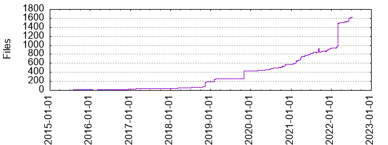

Files
- Total files
- 1629
- Total lines
- 216959
- Average file size
- 4284.58 bytes

| Extension | Files (%) | Lines (%) | Lines/file |
|---|
| 27 (1.66%) | 10223 (4.71%) | 378 |
| bazel | 1024 (62.86%) | 94034 (43.34%) | 91 |
| bazelrc | 1 (0.06%) | 20 (0.01%) | 20 |
| bzl | 129 (7.92%) | 33271 (15.34%) | 257 |
| c | 5 (0.31%) | 224 (0.10%) | 44 |
| cc | 20 (1.23%) | 213 (0.10%) | 10 |
| css | 1 (0.06%) | 2 (0.00%) | 2 |
| env | 2 (0.12%) | 3 (0.00%) | 1 |
| file | 1 (0.06%) | 1 (0.00%) | 1 |
| h | 5 (0.31%) | 62 (0.03%) | 12 |
| inc | 1 (0.06%) | 1 (0.00%) | 1 |
| j2 | 19 (1.17%) | 951 (0.44%) | 50 |
| js | 1 (0.06%) | 23 (0.01%) | 23 |
| json | 13 (0.80%) | 39273 (18.10%) | 3021 |
| lds | 1 (0.06%) | 2 (0.00%) | 2 |
| lock | 27 (1.66%) | 14125 (6.51%) | 523 |
| md | 31 (1.90%) | 5481 (2.53%) | 176 |
| patch | 2 (0.12%) | 27 (0.01%) | 13 |
| proto | 4 (0.25%) | 46 (0.02%) | 11 |
| py | 1 (0.06%) | 87 (0.04%) | 87 |
| rs | 246 (15.10%) | 16663 (7.68%) | 67 |
| sh | 11 (0.68%) | 512 (0.24%) | 46 |
| so | 2 (0.12%) | 2 (0.00%) | 1 |
| template | 1 (0.06%) | 15 (0.01%) | 15 |
| toml | 33 (2.03%) | 531 (0.24%) | 16 |
| txt | 13 (0.80%) | 293 (0.14%) | 22 |
| vm | 6 (0.37%) | 294 (0.14%) | 49 |
| yaml | 1 (0.06%) | 224 (0.10%) | 224 |
| yml | 1 (0.06%) | 338 (0.16%) | 338 |